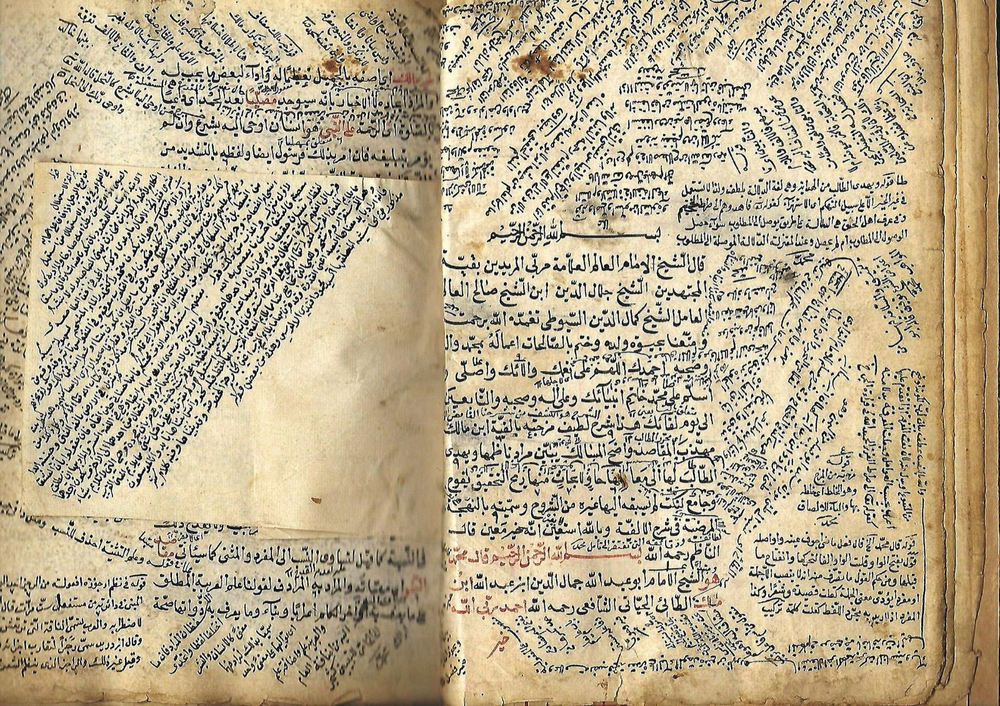
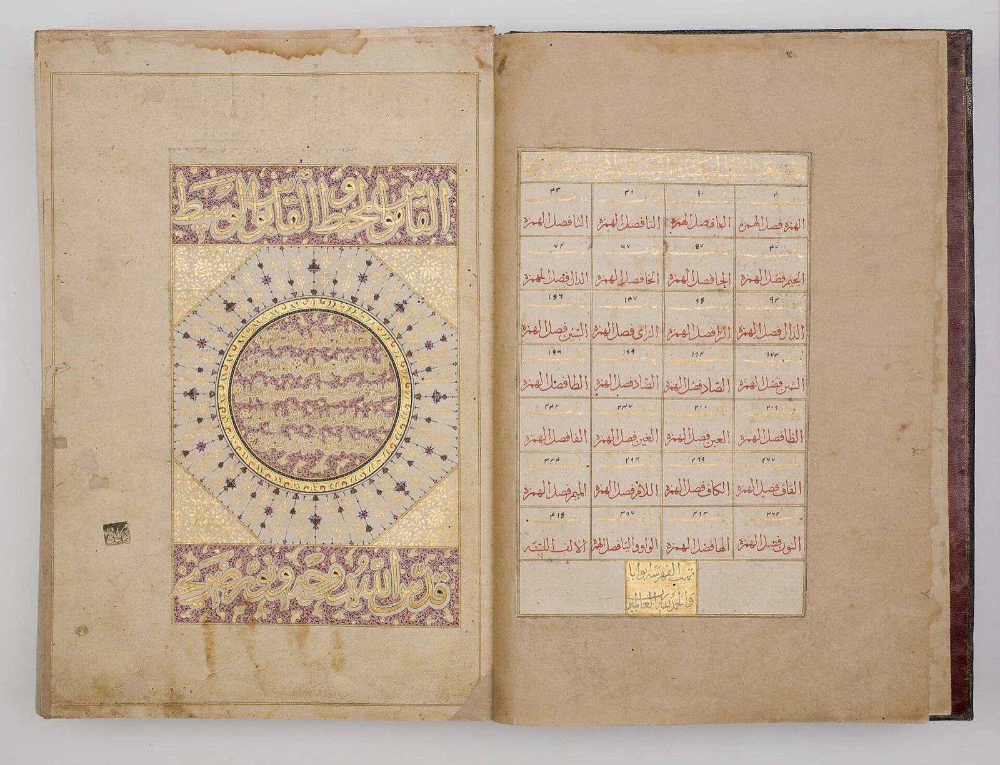
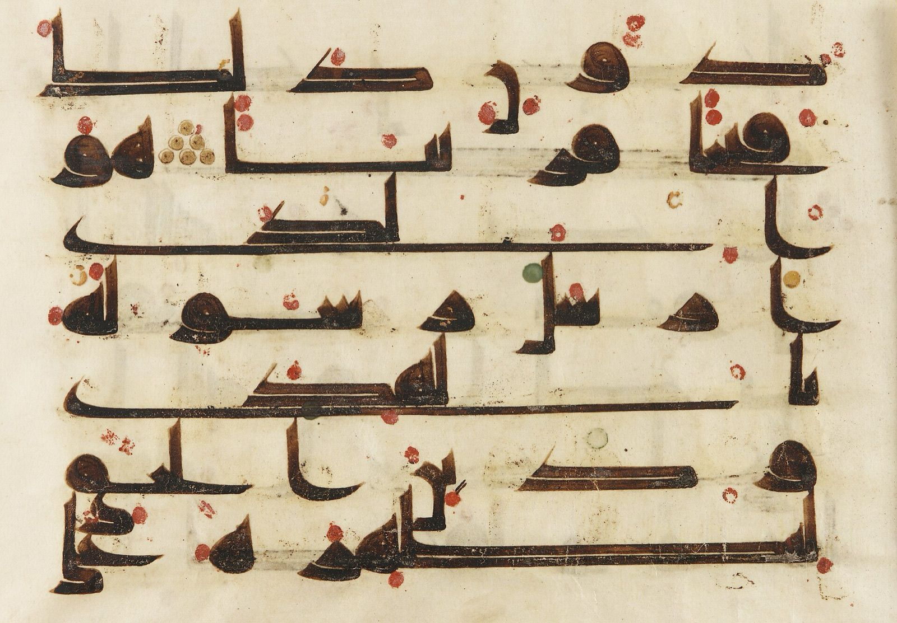
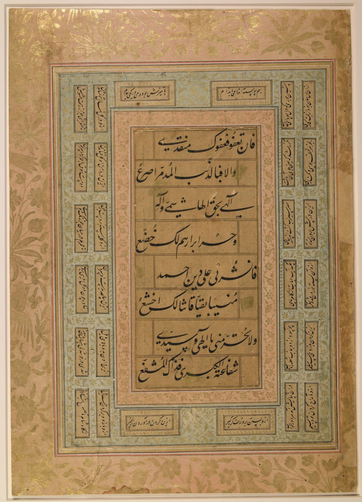
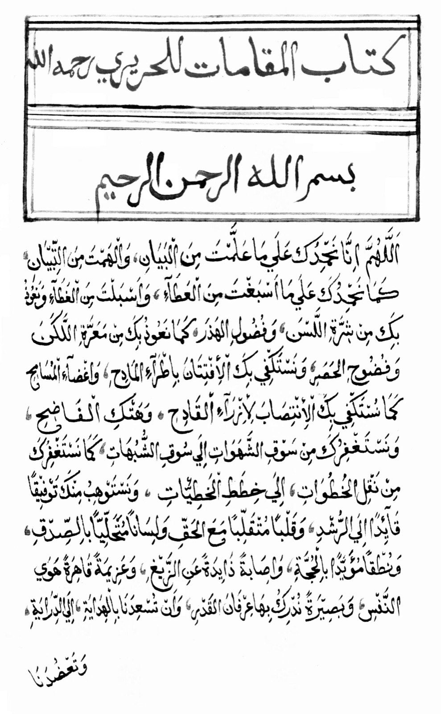
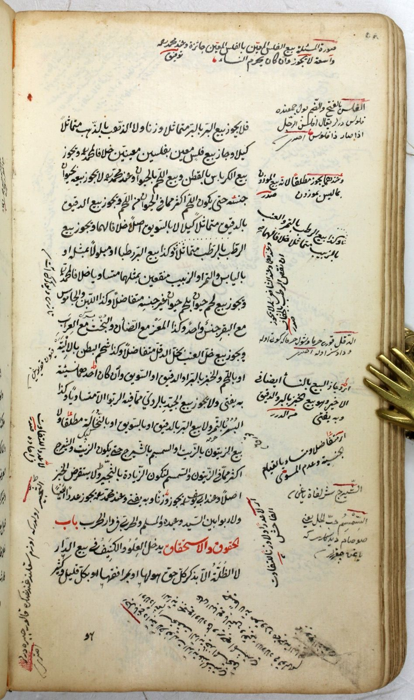

العربية
أدوات لعلوم العربية يستدعيها النموذج اللغوي، ومهاراتٌ تعلّمه كيف يحكم بها. الأداة تأتي بالدليل: نصٌّ يُراجَع، أو قاعدةٌ تُختبَر. والنموذج يحكم فيما يتعلّق بالمعنى، ويبيّن ما صحّحه على الأداة.
تسعٌ وثلاثون أداة، ومهارات لـ Claude Code تُثبَّت معها في إضافة (Plugin) واحدة. تعمل على جهازك بلا اتصال بعد التثبيت، مع Claude ومع أي عميل يدعم بروتوكول سياق النموذج (MCP). مفتوحة المصدر برخصة MIT.
mizan(word="مَبِيع")مرتبة القاعدة- الجذر
- ب ي ع (أجوف يائي)
- الصيغة
- اسم مفعول من الثلاثي، على «مَفْعُول»
- الأصل
- مَبْيُوع
- بالنقل
- نُقلت حركة الياء إلى الباء الساكنة قبلها، فصار «مَبُيْوع»
- بالحذف
- التقى ساكنان، فحُذفت واو مفعول (على مذهب سيبويه، والمحذوف عند الأخفش العين)، وكُسرت الباء لتصحّ الياء
scan_verse(verse="قفا نبك…")- البحر
- الطويل، تام
- الصدر
- فعولن مفاعيلن فعولن مفاعلن (الأخيرة مقبوضة)
- العجز
- فعولن مفاعيلن فعولُ مفاعلن (بالقبض)
- الرموز
11010110101011010110110- القافية
- «فَحَوْمَلِ»، رويّها اللام المكسورة، متداركة
maajim(root="حقق")مرتبة النقل- المعجم
- لسان العرب لابن منظور (ت 711هـ)
- الموضع
- ج10 ص49، بترقيم المطبوع
- النص
- «الحق: نقيض الباطل، وجمعه حقوق وحقاق، وليس له بناء أدنى عدد…»
takhrij_shahid(verse="قفا نبك…")مرتبة الترجيح- المواضع
- نحو 21، أدب 23، بلاغة 14
- الكتاب
- لسيبويه، ج4 ص205
- سر الصناعة
- لابن جني، ج2 ص501
- شرح الكافية
- للرضي، ج4 ص386
نموذجٌ فصيح، يجيب من حفظه
النماذج اللغوية تُحسن العربية عبارةً وفهمًا، لكنها في مسائل علومها تجيب من محفوظها الإحصائي، كعالمٍ واسع الحفظ بلا مكتبة يرجع إليها.
فلا يتميّز في جوابها المنقولُ من المستنتَج، ولا الصحيحُ من الموهوم، ويقع الخطأ بنبرة الواثق، في أخصّ مواضع الصنعة:
- في الميزان
- وزن المعتلّ على لفظه لا على أصله، وإسقاط خطوات الإعلال أو تخليطها.
- في العروض
- تعيين البحر بالتخمين حين يختلّ الضبط، وتقطيعٌ لا تتفق رموزه مع حروفه.
- في الشاهد
- نسبة البيت إلى غير قائله، أو روايته بلفظٍ لم يُروَ به.
- في المعجم
- نصٌّ يُنسب إلى «اللسان» أو «المقاييس» وليس فيهما بلفظه.

الفصل بين الصياغة والحكم
mizan(word="اسْتَقامَ")- الجذر
- ق و م (أجوف واوي)
- الوزن
- اِسْتَفْعَلَ
- الأصل
- اِسْتَقْوَمَ
- الإعلال
- نُقلت حركة الواو إلى القاف الساكنة قبلها، ثم قُلبت ألفًا لتحركها في الأصل وانفتاح ما قبلها الآن
- التحقق
- أعادت القواعدُ الأصلَ إلى الكلمة نفسها
يسأل الباحث بالعربية، كما يسأل أستاذه.
لا صيغة خاصة ولا أوامر: سؤالٌ في الصرف أو العروض أو المعجم، بلفظه.
فيختار النموذج الأداة، وتُخرج حكمها منظّمًا.
بينهما بروتوكول سياق النموذج (MCP). وتعمل الأداة على جهاز الباحث بلا اتصال، فلا تخرج النصوص منه ولا كلفة استضافة.
ثم يحكم النموذج ويصوغ الجواب، والدليل في حاشيته.
ما نقلته الأداة أو حسمته قاعدةٌ يُنقل كما هو. وما رجّحته آليًّا، كأبواب الإعراب، تَسِمه الأداة بذلك، فيراجعه النموذج بالمعنى، ثم يُقرّه أو يصحّحه ويذكر ما صحّحه وسببه. هذا المنهج تعلّمه إياه مهارات الإضافة. ومُخرَج الأداة ظاهر لمن أراد مراجعته، كما تُراجَع حاشية الكتاب.
مراتب الأحكام
ما تُخرجه الأدوات ليس من جنس واحد، فيُرتَّب بحسب مصدر الحكم، وبه تُقدَّر درجة الوثوق به وجهة الخطأ فيه.
تسعٌ وثلاثون أداة
في عشرة فروع
ما ترجع إليه الأدوات
مواردُ مفتوحة معروفة لدى الباحثين، تُنزَّل من مصادرها عند التثبيت، ولكلٍّ منها رخصته وشروط ناشره.




القاموس المحيط للفيروزآبادي: الفاتحة المذهّبة، وفهرس أبوابه بأرقام صفحاتها. مجموعة خليلي.
معجمًا تراثيًّا من «العين» إلى «التاج»، بالجزء والصفحة
بيتٍ في مدوّنة «أشعار» للبحث والتخريج
وفي المدوّنة التراثية 57 مصنَّفًا في نحو 12 مليون كلمة، ويمكن أن يُضاف إليها أيٌّ من 8,792 نصًّا في فهرس OpenITI، ومعها 77,429 كلمة قرآنية محلَّلة صرفيًّا.
ومن المحلّلات والنماذج: CAMeL Tools وقاعدتها الصرفية CALIMA-Star، ونماذج CAMeLBERT، ومشكِّل CATT، ومحلّل Stanza بنموذج AraELECTRA، وPyArud للعروض، وقطرب للتصريف.
الدقة بأرقام معلنة
تقيس أداة benchmark الدقة على بيانات معيارية، ويُعاد إنتاج كل رقم ببذرة العيّنة. والأرقام لا تصدق إلا على جنس عيّنتها.
| 43 / 43 | الميزان والإعلال43 حالة معيارية من كتب الصرف |
| 96.7% | نسبة النص إلى قائله30 شاعرًا من «أشعار»، ونصٌّ معزول من نحو 1500 كلمة |
| 78.8% | استخراج الجذر2,000 كلمة عشوائية من القرآن، بأرجح تحليل بلا سياق |
| 1.1% | خطأ تشكيل النثر40 سطرًا من قسم الاختبار في Tashkeela، نسبة الحروف المخطوءة |
| 15.2% | خطأ تشكيل الشعر40 بيتًا مشكولًا من «أشعار»، نسبة الحروف المخطوءة |
الفرق بين تشكيل النثر والشعر هو علّة الضبط الموجَّه بالعروض. ونسبة النصوص قيست على شعراء أكثرهم معاصرون، فلا تُعمَّم على الشعر القديم. والإعراب قيس على مجموعة ذهبية مصحّحة (83 جملة)، لكن قواعده ضُبطت عليها، وأول قياس على جمل لم تُرَ قبلُ أصاب الباب في 82 من 96 كلمة؛ ولذلك تَسِم الأداة ما رجّحته آليًّا ليراجعه النموذج. والبديع والدلالة لم تُقَس بعد.
وما لم يُقَس بعد
غاية المشروع أن يبلغ في كل فرع درجةً يُعتمد عليها في البحث، بقياسٍ معلَن لا بدعوى.
أُنجز
- معالج تثبيت رسومي لويندوز وماك
- تسعٌ وثلاثون أداة بمناهجها وحدودها
- إضافة لـ Claude Code بمهارات: الإعراب يراجعه النموذج ويصحّحه، ووجوه الإعراب بمصادرها
- سجلّ لخلاف النحاة: مسائل الإنصاف كلها والتبيين، ومواضعها في الهمع والارتشاف
- مجموعة اختبار للإعراب مصحّحة يدويًّا
- محرّك للإعلال يتحقق من نتيجته بنفسه
- التقطيع بالضبط الموجَّه، وعلم القافية بعيوبه
- التخريج الآلي للشاهد، ونسبة النصوص
- أداة قياس على بيانات معيارية معلنة
قيد العمل
- مهارة لكل فن: الأداة بالدليل، والنموذج بالحكم
- مشكِّل خاص بالشعر، يُعتمد إن فاق المشكِّل الحالي
- استضافة على الشبكة تُغني عن التثبيت
مخطط
- مجموعة اختبار ثالثة للإعراب والخلاف لم تُرَ قبل
- توسيع حالات الصرف المعيارية إلى أبوابه كلها
- تقويم بشري يشارك فيه متخصصون
- ورقة علمية تصف المنهج ونتائج القياس
ما ليست الأداة، وما يُسأل عنه

هل هي نموذج لغوي؟
لا. ولا تُدرّب نموذجًا ولا تُغيّره؛ هي أدوات يستدعيها النموذج، ويرجع إليها كما يرجع الباحث إلى كتاب.
هل أحكامها معصومة؟
لا. أحكامها على مراتب متفاوتة: النقل والقاعدة والترجيح، وما كان ترجيحًا يُعرض بوجوهه ولا يُجزم به.
هل تغني عن المصادر؟
لا. تختصر الطريق إلى الموضع بالجزء والصفحة، والتحقيق بعدها للباحث.
هل تضمن أن ينقل النموذج مُخرَجها بأمانة؟
لا. العبرة بمُخرَج الأداة نفسه، وهو ظاهر في تطبيق العميل لمن أراد مراجعته.
ما الفرق بين الأداة والمهارة؟
الأداة برنامج يُخرج دليلًا يُتحقَّق منه: نصًّا من كتاب بجزئه وصفحته، أو حكمًا من قاعدة. والمهارة تعليمات للنموذج: متى يستدعي الأداة، وكيف ينقل مُخرَجها، وما الذي يحكم فيه هو بالمعنى. فلا تُغني المهارة عن الأداة، لأن النموذج إذا أجاب من حفظه قد ينسب قولًا لم يُقَل أو صفحةً لا وجود لها.
هل تعمل بلا اتصال بالشبكة؟
نعم، بعد التثبيت. تُنزَّل البيانات مرة واحدة، ثم تعمل الأدوات على جهازك، إلا lexicon_lookup فإنها تبحث في موقع على الشبكة.
هل تعمل مع غير Claude؟
نعم، مع أي عميل يدعم بروتوكول سياق النموذج. والمعالج يربطها بتطبيق Claude Desktop تلقائيًّا.
ظهرت رسالة تحذير عند فتح المعالج؟
الملفان غير موقَّعين رقميًّا (التوقيع يكلّف مئات الدولارات سنويًّا)، فيُنبّهك النظام. والمعالج مفتوح المصدر في المستودع لتفحصه.
في ويندوز اضغط «مزيد من المعلومات» ثم «تشغيل على أي حال». وفي ماك انقر بالزر الأيمن على التطبيق واختر «فتح»، فإن لم يظهر الخيار ففي «إعدادات النظام ← الخصوصية والأمان» اضغط «فتح على أي حال».
كيف أحذفها؟
من «التطبيقات المثبّتة» في ويندوز، أو احذف التطبيق من مجلد التطبيقات في ماك.
نزّل، وافتح، وانتظر
معالج رسومي بالعربية يتولّى كل شيء، بلا سطر أوامر. يقيس تقدّمه أمامك، ويربط الأداة بـ Claude في آخره.
يلزم تطبيق Claude Desktop، واتصالٌ بالشبكة أثناء التثبيت وحده. وفي Claude Code تُثبَّت الإضافة بمهاراتها بأمرين: /plugin marketplace add ikagi07/arabiyya-mcp ثم /plugin install arabiyya@arabiyya. وتستطيع أن تجرّب المعالج هنا قبل تنزيله.
اختر نظام جهازك
arabiyya-setup-windows.exe٦١٢ ك.ب- شغّل الملف، واضغط «ابدأ التثبيت».
- اختر «كامل» (نحو 4 غيغابايت) أو «سريع» (نحو 2.5)، ثم انتظر من نصف ساعة إلى ساعة.
- أعد تشغيل Claude، فتظهر أدوات «العربية» فيه.
قائمٌ على أعمال غيره
الفضل في كل نتيجة صحيحة لما بناه هؤلاء وأتاحوه للباحثين، وما وقع من خطأ فعلى هذا المشروع لا عليهم.
سيد حسن
صمّم المشروع وحدّد فروعه ومناهجه ومصادره، وكُتبت شيفرته بمعونة نموذج Claude بتوجيهه ومراجعته.
ويُذكر ذلك لأن أداةً غايتها التمييز بين مصادر الأحكام أولى بأن تُبيّن مصدر صنعتها.
ويُرحَّب بملاحظات أهل الاختصاص: النص المُدخَل، والأداة، وما أخرجته، والصواب ومصدره.